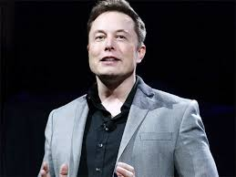
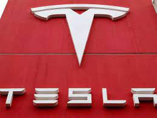

Elon Reeve Musk is a businessman and investor. He is the founder, chairman, CEO, and CTO of SpaceX; angel investor, CEO, product architect and former chairman of Tesla, Inc.; owner, chairman and CTO of X Corp.; founder of the Boring Company and xAI; co-founder of Neuralink and OpenAI; and president of the Musk Foundation. He is the wealthiest person in the world, with an estimated net worth of US$232 billion as of December 2023, according to the Bloomberg Billionaires Index, and $254 billion according to Forbes, primarily from his ownership stakes in Tesla and SpaceX. A member of the wealthy South African Musk family, Elon was born in Pretoria and briefly attended the University of Pretoria before immigrating to Canada at age 18, acquiring citizenship through his Canadian-born mother. Two years later, he matriculated at Queen's University at Kingston in Canada. Musk later transferred to the University of Pennsylvania, and received bachelor's degrees in economics and physics. He moved to California in 1995 to attend Stanford University. However, Musk dropped out after two days and, with his brother Kimbal, co-founded online city guide software company Zip2. The startup was acquired by Compaq for $307 million in 1999, and, that same year Musk co-founded X.com, a direct bank. X.com merged with Confinity in 2000 to form PayPal.

In October 2002, eBay acquired PayPal for $1.5 billion, and that same year, with $100 million of the money he made, Musk founded SpaceX, a spaceflight services company. In 2004, he became an early investor in electric vehicle manufacturer Tesla Motors, Inc. (now Tesla, Inc.). He became its chairman and product architect, assuming the position of CEO in 2008. In 2006, Musk helped create SolarCity, a solar-energy company that was acquired by Tesla in 2016 and became Tesla Energy. In 2013, he proposed a hyperloop high-speed vactrain transportation system. In 2015, he co-founded OpenAI, a nonprofit artificial intelligence research company. The following year, Musk co-founded Neuralink—a neurotechnology company developing brain–computer interfaces—and the Boring Company, a tunnel construction company. In 2022, he acquired Twitter for $44 billion. He subsequently merged the company into newly created X Corp. and rebranded the service as X the following year. In March 2023, he founded xAI, an artificial intelligence company.
Musk attended Waterkloof House Preparatory School, Bryanston High School, and then Pretoria Boys High School, where he graduated.Musk was a good but not exceptional student, earning a 61 in Afrikaans and a B on his senior math certification. Musk applied for a Canadian passport through his Canadian-born mother, knowing that it would be easier to immigrate to the United States this way. While waiting for his application to be processed, he attended the University of Pretoria for five months. Musk arrived in Canada in June 1989 and lived with a second cousin in Saskatchewan for a year, working odd jobs at a farm and lumber mill. In 1990, he entered Queen's University in Kingston, Ontario.
Musk's family was wealthy during his youth. His father was elected to the Pretoria City Council as a representative of the anti-apartheid Progressive Party and has said that his children shared their father's dislike of apartheid. His maternal grandfather, Joshua N. Haldeman, was an American-born Canadian who took his family on record-breaking journeys to Africa and Australia in a single-engine Bellanca airplane. After his parents divorced in 1980, Musk chose to live primarily with his father. Musk later regretted his decision and became estranged from his father.He has a paternal half-sister and a half-brother. In one incident, after having called a boy whose father had committed suicide "stupid", Musk was severely beaten and thrown down concrete steps. His father derided Elon for his behavior and showed no sympathy for him despite his injuries. He was also an enthusiastic reader of books, later attributing his success in part to having read Benjamin Franklin: An American Life, Lord of the Flies, the Foundation series, and The Hitchhiker's Guide to the Galaxy. At age ten, he developed an interest in computing and video games, teaching himself how to program from the VIC-20 user manual. At age twelve, Musk sold his BASIC-based game Blastar to PC and Office Technology magazine for approximately $500
In 1995, Musk, his brother Kimbal, and Greg Kouri founded Global Link Information Network, later renamed to Zip2. The company was financed mainly through a financing round of US$200,000, of which 10% was contributed by his father Errol Musk. The company developed an Internet city guide with maps, directions, and yellow pages, and marketed it to newspapers. They worked at a small rented office in Palo Alto, with Musk coding the website every night. Eventually, Zip2 obtained contracts with The New York Times and the Chicago Tribune. The brothers persuaded the board of directors to abandon a merger with CitySearch; however, Musk's attempts to become CEO were thwarted.Compaq acquired Zip2 for $307 million in cash in February 1999,and Musk received $22 million for his 7-percent share
In early 2001, Musk became involved with the nonprofit Mars Society and discussed funding plans to place a growth-chamber for plants on Mars. In October of the same year, he traveled to Moscow with Jim Cantrell and Adeo Ressi to buy refurbished intercontinental ballistic missiles (ICBMs) that could send the greenhouse payloads into space. He met with the companies NPO Lavochkin and Kosmotras; however, Musk was seen as a novice and the group returned to the United States empty-handed. In February 2002, the group returned to Russia with Mike Griffin (president of In-Q-Tel) to look for three ICBMs. They had another meeting with Kosmotras and were offered one rocket for $8 million, which Musk rejected. He instead decided to start a company that could build affordable rockets. With $100 million of his own money,[84] Musk founded SpaceX in May 2002 and became the company's CEO and Chief Engineer. SpaceX attempted its first launch of the Falcon 1 rocket in 2006. Though the rocket failed to reach Earth orbit, it was awarded a Commercial Orbital Transportation Services program contract from NASA Administrator (and former SpaceX consultant) Mike Griffin later that year. After two more failed attempts that nearly caused Musk and his companies to go bankrupt,SpaceX succeeded in launching the Falcon 1 into orbit in 2008. Later that year, SpaceX received a $1.6 billion Commercial Resupply Services contract from NASA for 12 flights of its Falcon 9 rocket and Dragon spacecraft to the International Space Station, replacing the Space Shuttle after its 2011 retirement. In 2012, the Dragon vehicle docked with the ISS, a first for a commercial spacecraft
Tesla, Inc., originally Tesla Motors, was incorporated in July 2003 by Martin Eberhard and Marc Tarpenning, who financed the company until the Series A round of funding. Both men played active roles in the company's early development prior to Musk's involvement.Musk led the Series A round of investment in February 2004; he invested $6.5 million, became the majority shareholder, and joined Tesla's board of directors as chairman.Musk took an active role within the company and oversaw Roadster product design,but was not deeply involved in day-to-day business operations. Following a series of escalating conflicts in 2007, and the financial crisis of 2007–2008, Eberhard was ousted from the firm.Musk assumed leadership of the company as CEO and product architect in 2008. A 2009 lawsuit settlement with Eberhard designated Musk as a Tesla co-founder, along with Tarpenning and two others. As of 2019, Musk was the longest-tenured CEO of any automotive manufacturer globally. In 2021, Musk nominally changed his title to "Technoking" while retaining his position as CEO.
Tesla was incorporated in July 2003 by Martin Eberhard and Marc Tarpenning as Tesla Motors. The company's name is a tribute to inventor and electrical engineer Nikola Tesla. In February 2004 Elon Musk joined as the company's largest shareholder and in 2008 he was named CEO. In 2008, the company began production of its first car model, the Roadster sports car, followed by the Model S sedan in 2012, the Model X SUV in 2015, the Model 3 sedan in 2017, the Model Y crossover in 2020, the Tesla Semi truck in 2022 and the Cybertruck pickup truck in 2023. The Model 3 is the all-time bestselling plug-in electric car worldwide, and in June 2021 became the first electric car to sell 1 million units globally. Tesla is one of the world's most valuable companies. In October 2021, Tesla's market capitalization temporarily reached $1 trillion, the sixth company to do so in U.S. history. As of 2023, it is the world's most valuable automaker. In 2022, the company led the battery electric vehicle market, with 18% share. Tesla has been the subject of lawsuits, government scrutiny, and journalistic criticism, stemming from allegations of whistleblower retaliation, worker rights violations, product defects, and Musk's many controversial statements.
